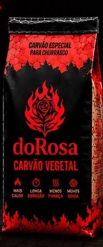
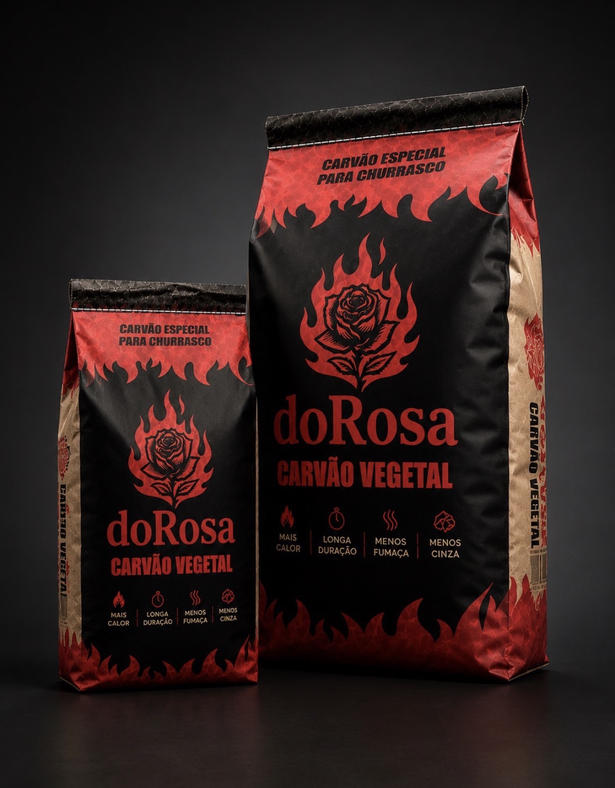
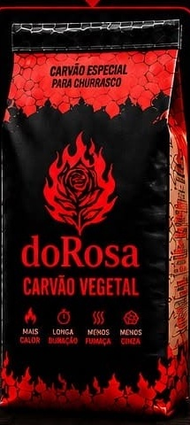
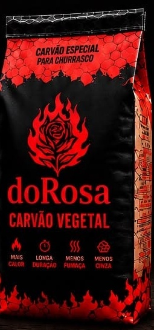
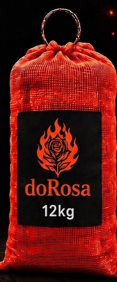
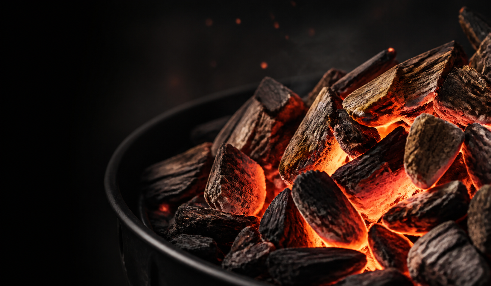
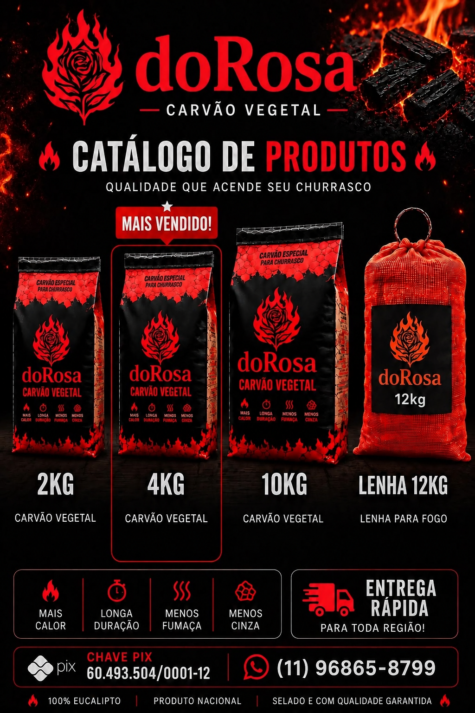

Carvão e lenha • Jundiaí e região
O fogo que
reúne histórias.
Carvão vegetal e lenha doRosa com entrega rápida em Jundiaí e região. Escolha o tamanho e peça pelo WhatsApp.

Acenda o momento
Carvão e lenha em Jundiaí e região.
Para quem procura carvão em Jundiaí, a doRosa oferece carvão vegetal apresentado como especial para churrasco e atendimento direto pelo WhatsApp.
A linha reúne carvão vegetal em embalagens de 2 kg, 4 kg e 10 kg, além de lenha.
Linha doRosa
Escolha o produto para o seu momento.
Opções de carvão vegetal e lenha para diferentes necessidades.



Entrega rápida em Jundiaí e toda a região
Consulte preços e disponibilidade pelo WhatsApp.
O que a embalagem destaca
Quatro sinais de uma boa brasa.
Mais calor
Mais calor para acompanhar o preparo do seu churrasco.
Longa duração
Uma brasa que permanece acesa por mais tempo.
Menos fumaça
Mais conforto durante o preparo ao redor da churrasqueira.
Menos cinza
Menos resíduos depois que o churrasco termina.
100% eucaliptoProduto nacionalSelado e com qualidade garantida
Galeria doRosa
Do pacote à brasa.
Conheça as embalagens doRosa e veja de perto o carvão em brasa.


Entrega em Jundiaí e região
Chame a doRosa.
Fale diretamente pelo WhatsApp para consultar produtos, disponibilidade e entrega na sua região.